본 포스트는 인과랩 내부 스터디 자료 MAG · PAG · FCI — 잠재변수와 선택편향 아래의 인과 그래프: 표현 · 동치 · 학습 · 사용(2026년 8월, 85장 슬라이드)을 바탕으로, 잠재변수가 있는 인과 그래프를 처음 접하는 독자도 논리적 흐름을 따라갈 수 있도록 재구성한 것입니다. 원자료가 밝힌 참고 원전은 Richardson–Spirtes (2002) · Zhang (2008) · Ali et al. (2009) · Colombo et al. (2012) · Perković et al. (2018)이며, 일부 구성은 Adèle Ribeiro의 Causal Data Science(2023) 강의를 참고하고 있습니다. 원자료가 전제로 삼은 배경 지식은 DAG · ADMG · CPDAG · d-분리이며, 이는 18강 Causal Discovery에서 다룬 내용에 해당합니다.
한 줄 요약 (TL;DR)
“DAG 세계에서 하던 모든 일 — 표현 · 동치류 · 학습 · 조정 — 을 잠재변수가 있는 세계에서 다시 한다. 표현은 MAG, 동치류는 PAG, 학습은 FCI, 조정은 GAC.”
잠재 교란자를 주변화(marginalize)하고 나면 관측 변수 위의 조건부 독립 구조는 어떤 DAG로도 표현되지 않을 수 있습니다. 이 자료는 그 반례에서 출발해, 쌍마다 엣지를 정확히 하나만 두면서 조건부 독립 구조를 손실 없이 담는 표준형 MAG(maximal ancestral graph), 그 마르코프 동치류의 대표 그래프 PAG(partial ancestral graph), 관측 데이터에서 PAG를 복원하는 FCI 알고리즘(건전성 · 완전성 포함), 그리고 PAG 하나로 동치류 전체를 상대하며 인과효과를 식별하는 일반화 조정 기준(GAC)까지를 하나의 사슬로 연결합니다. 목표는 MAG/PAG를 읽고, 만들고, 판정할 수 있게 되는 것이며, FCI가 왜 하필 그 규칙들을 쓰는지까지 이해하는 것입니다.
Part 1. 왜 DAG로는 부족한가 (Why DAGs Are Not Enough)
1.1 우리가 아는 세계 — DAG와 CPDAG 30초 복습
먼저 지금까지 서 있던 땅을 확인하겠습니다.
- 분포 \(P\)가 그래프 \(\mathcal{G}\)에 대해 마르코프(Markov)적이고 충실(faithful)하면, \(\mathcal{G}\)의 d-분리 구조 = 분포의 조건부 독립(CI) 구조가 됩니다.
- 여러 DAG가 같은 CI를 함의할 수 있으며, 이때 이들을 마르코프 동치(Markov equivalent)라고 부릅니다.
- Verma–Pearl (1990): 두 DAG가 마르코프 동치 \(\iff\) 같은 골격(skeleton) + 같은 v-구조(v-structure).
- 동치류의 대표 그래프가 바로 CPDAG입니다.
여기서 중요한 것은 이 전부가 “모든 변수를 관측했다”는 가정 위에 서 있다는 사실입니다.
1.2 현실 — 안 보이는 변수가 있다
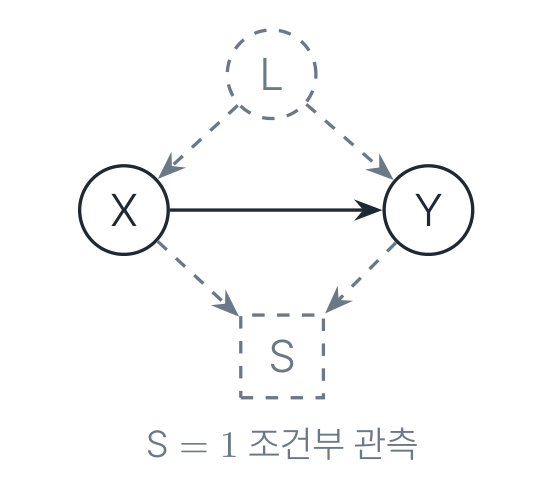
두 종류의 “보이지 않음”이 있습니다.
- 잠재 교란(latent confounding) \(L\): 측정하지 못한 공통 원인입니다.
- 선택 편향(selection bias) \(S\): 특정 조건을 만족하는 표본만 관측되는 상황입니다(병원 내원자만, 설문 응답자만, …).
관측 변수 \(\mathbf{O}\)만 남기고 나머지를 주변화하면, CI 구조가 DAG의 언어 밖으로 나갈 수 있습니다. 이것이 이번 자료 전체의 출발점입니다.
1.3 주변화하면 DAG 밖으로 나간다 — 4변수 반례
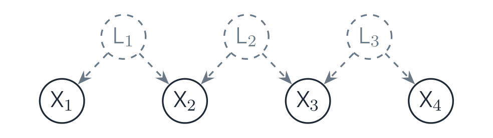
위 구조가 관측 변수 위에서 만들어 내는 조건부 독립의 전체 목록은 다음과 같습니다.
\[ X_1 \perp\!\!\!\perp X_3 \mid \emptyset,\ \{X_4\} \] \[ X_2 \perp\!\!\!\perp X_4 \mid \emptyset,\ \{X_1\} \] \[ X_1 \perp\!\!\!\perp X_4 \mid \emptyset,\ \{X_2\},\ \{X_3\} \]
이 셋을 제외한 나머지 조건은 전부 종속입니다(예: \(X_1 \not\perp\!\!\!\perp X_3 \mid \{X_2\}\)).
세 줄 증명 — 왜 DAG로는 불가능한가
어떤 DAG \(\mathcal{D}\)가 \(\{X_1, \dots, X_4\}\) 위에서 이 CI를 정확히 낸다고 가정하고(충실성 가정), 모순을 유도하겠습니다.
- 골격이 강제된다. \(X_1\)–\(X_2\), \(X_2\)–\(X_3\), \(X_3\)–\(X_4\)는 어떤 조건집합에서도 종속이므로 인접해야 합니다. 나머지 쌍은 분리집합이 존재하므로 비인접입니다. 따라서 \(\mathcal{D}\)는 사슬 \(X_1 - X_2 - X_3 - X_4\)입니다.
- \(X_2\)가 충돌자다. \(X_1 \perp\!\!\!\perp X_3 \mid \emptyset\)인데 경로 \(X_1 - X_2 - X_3\)이 존재합니다. 조건집합이 비어 있는데도 막혀 있으려면 통과 노드가 충돌자여야 하므로, \(X_1 \to X_2 \leftarrow X_3\)입니다.
- \(X_3\)도 충돌자다 — 그런데 모순이다. 같은 논리를 \(X_2 \perp\!\!\!\perp X_4 \mid \emptyset\)에 적용하면 \(X_2 \to X_3 \leftarrow X_4\)를 얻습니다. 그런데 단 하나의 엣지 \(X_2\)–\(X_3\)이 2단계에서는 \(X_3 \to X_2\), 3단계에서는 \(X_2 \to X_3\)이어야 합니다. 모순입니다. \(\blacksquare\)
잠재변수를 주변화한 분포의 CI 구조는 일반적으로 관측 변수 위의 어떤 DAG로도 표현되지 않습니다. 더 큰 그래프 클래스가 필요합니다.
1.4 후보 1: ADMG — 이미 아는 언어, 그러나 학습의 목표물로는 부적합
ADMG(acyclic directed mixed graph, 잠재 투영 latent projection의 결과)는 CI를 정확히 담습니다. 그런데 세 가지 문제가 있습니다.
- 너무 많다. \(n = 5\)일 때 DAG는 29,281개인 반면, 혼합 그래프 후보 공간은 쌍당 6가지 조합이므로 \(6^{10} \approx 6 \times 10^{7}\)입니다(비순환 제약을 걸기 전 기준).
- CI로 구별이 안 된다. 서로 다른 ADMG가 정확히 같은 CI를 함의합니다. 대표적인 예가 \(X \to Y\) 하나짜리 그래프와 \(X \to Y\) + \(X \leftrightarrow Y\)를 함께 가진 보우(bow) 그래프입니다.
- 학습의 출력물이 될 수 없다. 데이터(즉 CI)로 도달 가능한 대상이 아니면, 학습 알고리즘이 그것을 출력할 방법이 없습니다.
그래서 필요한 것은 ADMG의 CI 구조를 손실 없이, 쌍마다 엣지 하나로 요약하는 표준형 \(\Rightarrow\) MAG, 그리고 그 동치류의 대표 \(\Rightarrow\) PAG입니다.
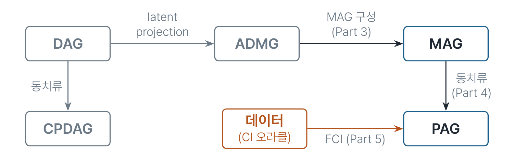
1.5 ADMG vs MAG — 미리 보는 다리
둘 다 \(\to\)와 \(\leftrightarrow\)를 쓰지만 서로 다른 물건입니다.
| ADMG | MAG | |
|---|---|---|
| 엣지의 뜻 | 메커니즘의 투영(잠재 경유 포함) | 조상 관계 요약 |
| 쌍당 엣지 수 | 여러 개 가능(\(X \to Y\) + \(X \leftrightarrow Y\)) | 정확히 \(\le 1\) |
| 담는 정보 | CI + Verma 제약 등 그 이상 | CI만(정확히 보존) |
| CI로 식별 | 불가(같은 CI인 ADMG 다수) | 동치류(PAG)까지 가능 |
| 효과 식별 | ID 알고리즘(완전) | CIDP (Jaber et al. 2022) |
같은 기호를 쓰지만 의미론이 다르며, Part 3에서 이 둘을 정확히 가르겠습니다.
1.6 표기법 (Notations)
이 자료 전체에서 쓰는 약속입니다.
마크(mark) — 엣지의 끝점 기호 3종
- 꼬리(tail) \(-\), 화살촉(arrowhead) \(>\), 원(circle) \(\circ\)
- 엣지는 마크 두 개의 조합입니다: \(\to\), \(\leftrightarrow\), \(-\), \(\circ\!\!\to\), \(\circ\!\!-\!\!\circ\), \(\circ\!\!-\) (총 6종)
- \(\ast\)는 와일드카드입니다. \(A \ast\!\!\to B\)는 “\(B\) 쪽이 화살촉인 아무 엣지”를 뜻합니다.
그래프 기호
- \(\mathrm{pa}, \mathrm{ch}, \mathrm{an}, \mathrm{de}\): 부모 · 자식 · 조상 · 자손 (관례상 \(\mathrm{an}(X) \ni X\), \(\mathrm{de}(X) \ni X\))
- \(\mathrm{sp}(X)\): 배우자(spouse), 즉 \(X \leftrightarrow\)로 이어진 이웃
- \(\mathrm{adj}(X)\): 인접 노드 전체
- \(\mathbf{O}, \mathbf{L}, \mathbf{S}\): 관측 · 잠재 · 선택 변수
그림 규약으로 점선 원은 잠재 변수 \(L\), 점선 사각형은 선택 변수 \(S\)를 나타냅니다.
Part 2. Mixed Graph와 m-분리 (Mixed Graphs and m-Separation)
2.1 혼합 그래프 (Mixed Graph)
혼합 그래프(mixed graph)는 \(\to\), \(\leftrightarrow\), \(-\) 세 종류의 엣지를 가지며 쌍당 최대 1개의 엣지를 둡니다. 핵심은 충돌자 판정이 엣지 종류가 아니라 마크로 결정된다는 점입니다.
경로 위의 비끝점 \(V\)가 충돌자(collider) \(\iff\) \(V\)에 닿는 두 엣지 모두 화살촉이 \(V\)를 향한다.
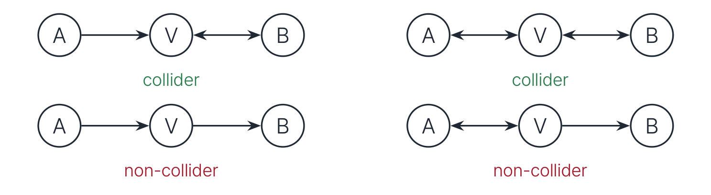
2.2 m-분리 (m-Separation)
d-분리와 완전히 같은 논리이며, 어휘만 넓어진 것입니다.
경로 \(p\)와 조건집합 \(\mathbf{Z}\)에 대해, \(p\) 위의 비끝점 \(V\)가:
| 활성(경로를 열어 둠) | 비활성(경로를 막음) | |
|---|---|---|
| 비충돌자 | \(V \notin \mathbf{Z}\) | \(V \in \mathbf{Z}\) |
| 충돌자 | \(V \in \mathrm{An}(\mathbf{Z})\) | \(V \notin \mathrm{An}(\mathbf{Z})\) |
경로 \(p\)가 \(\mathbf{Z}\)에 막힌다 \(\iff\) \(p\) 위에 비활성인 비끝점이 하나라도 있다.
\(\mathbf{Z}\)가 \(X, Y\)를 m-분리한다 \(\iff\) \(X\)–\(Y\) 사이 모든 경로가 막힌다. 표기: \((X \perp\!\!\!\perp Y \mid \mathbf{Z})_{\mathcal{G}}\).
DAG에서는 d-분리와 정확히 일치합니다. 여기서 \(\mathrm{An}(\mathbf{Z})\)는 방향 엣지로만 정의되며 \(\mathbf{Z}\) 자신을 포함합니다.
Richardson–Spirtes (2002) §3.4의 원문 표기는 anterior \(\mathrm{ant}(\mathbf{Z})\)이지만, 충돌자는 무방향 엣지를 가질 수 없으므로 \(\mathrm{An}(\mathbf{Z})\)와 동치입니다.
2.3 m-분리 손풀기
\(A\)–\(D\) 경로는 \(A \to B \leftrightarrow C \leftarrow D\) 하나뿐이고, 충돌자는 \(B\)와 \(C\)입니다. 어떤 \(\mathbf{Z}\)가 \(A\)와 \(D\)를 분리하는지 하나씩 따져 보겠습니다.
- \(\mathbf{Z} = \emptyset\): \(B \notin \mathrm{An}(\emptyset)\) \(\to\) 막힘 \(\to\) 분리
- \(\mathbf{Z} = \{B\}\): \(B\)는 활성이 되지만, \(C \notin \mathrm{An}(\{B\})\)이므로 \(C\)에서 막힘 \(\to\) 분리
- \(\mathbf{Z} = \{C\}\): \(B \notin \mathrm{An}(\{C\})\) \(\to\) 막힘 \(\to\) 분리
- \(\mathbf{Z} = \{B, C\}\): 둘 다 활성 \(\to\) 경로가 열림 \(\to\) 종속
2.4 조상 그래프 (Ancestral Graph)
혼합 그래프가 조상적(ancestral)이다 \(\iff\)
- 유향 순환(directed cycle)이 없다.
- 준 유향 순환(almost directed cycle)이 없다. 즉 \(A \leftrightarrow B\)이면서 \(A \in \mathrm{an}(B)\)인 상황이 금지됩니다.
- \(A - B\)(무방향)이면 \(A, B\)는 부모도 배우자도 없다.
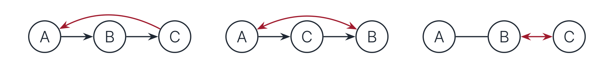
왜 하필 이 세 조건인가
마크를 “조상 관계에 대한 주장”으로 읽으면 세 조건이 전부 당연해집니다. 이것이 이 자료에서 가장 중요한 문장입니다.
\(A\)–\(B\) 엣지에서
\[ \text{arrowhead at } B \;=\; \text{“} B \notin \mathrm{an}(A \cup \mathbf{S}) \text{”} \] \[ \text{tail at } A \;=\; \text{“} A \in \mathrm{an}(B \cup \mathbf{S}) \text{”} \]
이 규약으로 세 엣지를 다시 읽어 보겠습니다.
- \(A \to B\): \(A\)는 (\(B\) 또는 \(\mathbf{S}\)의) 조상이고, \(B\)는 아닙니다.
- \(A \leftrightarrow B\): 서로 조상이 아닙니다. 그렇다면 둘이 인접한 이유는 잠재 공통 원인뿐입니다.
- \(A - B\): 둘 다 서로의(혹은 \(\mathbf{S}\)의) 조상입니다 \(\to\) 선택 편향의 흔적입니다.
조건 (1)(2)(3)은 이 주장들이 서로 모순되지 않기 위한 최소 요건입니다. 예컨대 \(A \leftrightarrow B\)는 “\(A\)는 \(B\)의 조상이 아니다”를 주장하는데 여기에 \(A \in \mathrm{an}(B)\)가 겹치면 정면충돌이며, 그래서 조건 (2)가 필요합니다.
2.5 유도 경로 (Inducing Path)
조상 그래프에서 \(A\)–\(B\) 사이 경로 \(p\)가 원시 유도 경로이다 \(\iff\) \(p\)의 모든 비끝점이 충돌자이고, 각 충돌자가 \(\mathrm{an}(\{A, B\})\)에 속한다.
(Part 3의 투영에서는 \(\langle \mathbf{L}, \mathbf{S} \rangle\)-상대 일반형을 씁니다. 즉 \(\mathbf{L}\)에 속하는 비끝점은 충돌자가 아니어도 되고, 충돌자 조건은 \(\mathrm{an}(\{A, B\} \cup \mathbf{S})\)로 완화됩니다.)
이 개념이 중요한 이유는 다음 정리 때문입니다.
정리 (Richardson–Spirtes 2002, Cor. 4.3). 조상 그래프에서 \[A, B \text{ 사이 원시 유도 경로 존재} \iff \text{어떤 } \mathbf{Z} \subseteq \mathbf{V} \setminus \{A, B\} \text{도 } A, B \text{를 m-분리하지 못한다.}\]
- 엣지 하나짜리 경로도 (비끝점이 없으므로) 자동으로 유도 경로입니다. 따라서 인접한 쌍은 당연히 분리 불가입니다.
- 직관: 충돌자를 열려고 조건화하면, “조상” 조건 때문에 다른 경로가 열립니다. 조건을 넣어도 빼도 연결이 남는 구조인 셈입니다.
즉 유도 경로는 “어떤 관측 조건집합으로도 못 가르는 쌍”의 증명서입니다.
2.6 최대성(Maximality)과 MAG
조상 그래프 \(\mathcal{G}\)가 최대적(maximal)이다 \(\iff\) 모든 비인접 쌍이 어떤 집합으로든 m-분리된다.
MAG = maximal ancestral graph.
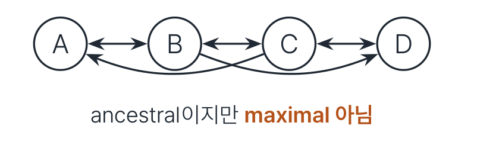
2.7 유일한 완성 (Unique Maximal Completion)
빠진 엣지는 \(\leftrightarrow\)로만, 그것도 단 하나의 방식으로 채워집니다.
정리 (Richardson–Spirtes 2002, §5). 모든 조상 그래프는 양방향 엣지만 추가하여 유일한 MAG로 확장된다. (같은 m-분리 구조를 유지한 채.)
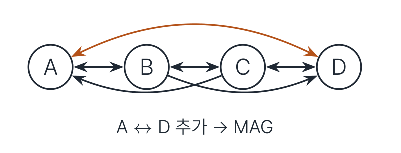
Part 3. MAG — 구성과 의미론 (MAG: Construction and Semantics)
3.1 DAG/ADMG에서 MAG로
인접은 유도 경로가 결정하고, 마크는 조상 관계가 결정합니다.
DAG \(\mathcal{G}\)가 \(\mathbf{O} \cup \mathbf{L} \cup \mathbf{S}\) 위에 있을 때, \(\mathbf{O}\) 위의 MAG \(\mathcal{M}_{\mathcal{G}}\)는 다음으로 구성됩니다.
- 인접: \(A, B\)가 인접 \(\iff\) \(\mathcal{G}\)에 \(\langle \mathbf{L}, \mathbf{S} \rangle\)-상대 유도 경로가 존재한다. (비끝점은 \(\mathbf{L}\)에 속하거나 충돌자이고, 충돌자는 \(\mathrm{an}(\{A, B\} \cup \mathbf{S})\)에 속한다.)
- 마크: \(A \in \mathrm{an}_{\mathcal{G}}(B \cup \mathbf{S})\)이면 꼬리, 아니면 화살촉. 이로써 \(\to\) / \(\leftarrow\) / \(\leftrightarrow\) / \(-\) 네 경우가 자동으로 결정됩니다.
ADMG를 입력으로 받고 싶다면(보우 포함), 각 \(\leftrightarrow\)를 잠재 공통 부모로 펼친 정준 DAG(canonical DAG)로 바꾼 뒤 적용하면 됩니다. Richardson–Spirtes의 구성과 증명은 조상 그래프 입력을 기준으로 하기 때문입니다.
결과는 항상 MAG이며, \(\mathbf{O}\) 위의 CI 구조를 정확히 보존합니다.
\[ (X \perp\!\!\!\perp Y \mid \mathbf{Z} \cup \mathbf{S})_{\mathcal{G}} \quad\iff\quad (X \perp\!\!\!\perp Y \mid \mathbf{Z})_{\mathcal{M}_{\mathcal{G}}} \]
여기서 \(X, Y, \mathbf{Z} \subseteq \mathbf{O}\)는 쌍마다 서로소입니다.
3.2 첫 예제 — 무엇이 남고 무엇이 합쳐지나
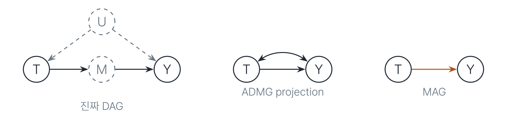
3.3 MAG 엣지의 정확한 뜻
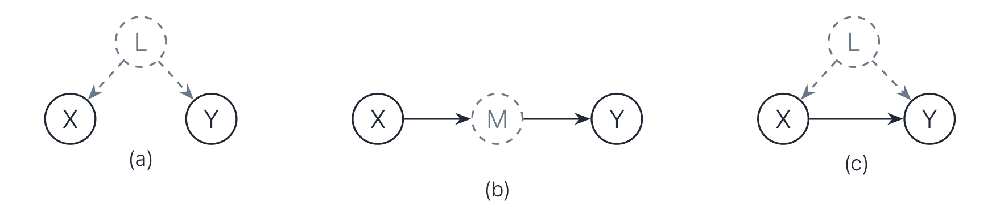
(c)에서도 MAG는 \(X \to Y\)입니다. MAG의 \(X \to Y\)는 “\(X\)가 \(Y\)의 조상”일 뿐, “교란 없음”이 아닙니다. 교란 없음을 보장하는 엣지는 따로 있으며, 그것이 Part 6에서 다룰 가시적(visible) 엣지입니다.
3.4 Verma 예제 — MAG가 버리는 정보
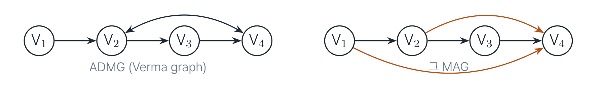
두 가지 변화를 따로 짚어 보겠습니다.
- \(V_2 \leftrightarrow V_4\)인데 \(V_2 \in \mathrm{an}(V_4)\)입니다(\(V_2 \to V_3 \to V_4\)). 마크 의미론상 조상인 쪽은 꼬리여야 하므로 MAG에서는 \(V_2 \to V_4\)가 됩니다.
- \(\langle V_1, V_2, V_4 \rangle\)가 유도 경로입니다(\(V_2\)가 충돌자, \(V_2 \in \mathrm{an}(V_4)\)). 따라서 \(V_1 \to V_4\)라는 새 엣지가 생깁니다.
결과 MAG는 그래프로서 DAG입니다. 즉 CI만 보면 잠재변수 없는 세계와 구별할 수 없습니다.
그러나 원래의 ADMG는 CI가 아닌 Verma 등식 제약을 추가로 함의합니다. MAG/PAG 의미론은 이것을 버립니다. 이것이 ADMG 기반 식별(ID)과 PAG 기반 식별이 갈라지는 근원입니다.
3.5 선택 편향의 흔적 — 무방향 엣지
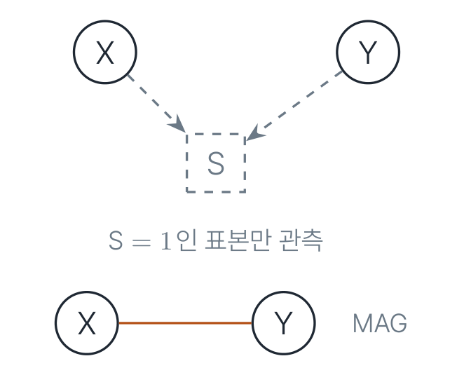
- \(X, Y\)가 모두 \(\mathrm{an}(S)\)이므로 양 끝이 다 꼬리 \(\to\) \(X - Y\)입니다.
- 충돌자 \(S\)를 “항상 조건화”하는 셈이므로 \(X, Y\)는 분리 불가 \(\to\) 인접이 맞습니다.
- 조상 그래프 조건 (3) 때문에 무방향 부분은 그래프의 “맨 앞”에만 존재합니다(부모도 배우자도 없음).
선택 편향이 없으면(\(\mathbf{S} = \emptyset\)) 무방향 엣지도 없습니다. 이후 기본 설정에서는 \(\to\)와 \(\leftrightarrow\)만 등장합니다.
3.6 정준 DAG — MAG는 빈 껍데기가 아니다
MAG \(\mathcal{M}\)이 주어지면 다음과 같이 DAG를 만듭니다.
- \(A \leftrightarrow B\)마다 잠재 변수 \(L_{AB}\)를 두고 \(L_{AB} \to A\), \(L_{AB} \to B\)
- \(A - B\)마다 선택 변수 \(S_{AB}\)를 두고 \(A \to S_{AB} \leftarrow B\)
- \(A \to B\)는 그대로
이렇게 만든 DAG의 MAG는 다시 \(\mathcal{M}\)입니다.
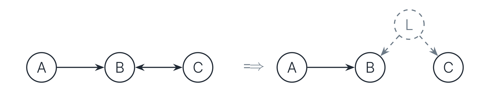
3.7 Part 3 요약 — MAG가 담는 것과 버리는 것
| 담는 것 | 버리는 것 |
|---|---|
| \(\mathbf{O}\) 위 CI 구조 전부, 정확히 | 메커니즘 구분: \(X \to Y\)가 직접 효과인지 교란이 겹쳐 있는지(보우는 못 그림) |
| 조상 관계 주장(마크 의미론) | CI 밖의 제약(Verma 등식 등) |
| 잠재 교란 · 선택의 “요약된” 흔적(\(\leftrightarrow\), \(-\)) | 잠재 변수의 개수 · 위치 |
다음 질문은 자연스럽습니다. 서로 다른 MAG가 같은 CI를 낼 수 있다면, CI(즉 데이터)로 도달 가능한 것은 어디까지인가?
Part 4. Markov 동치와 PAG (Markov Equivalence and PAG)
4.1 같은 질문, 더 어려운 무대
DAG에서는 골격 + v-구조로 끝났습니다(Verma–Pearl 1990). MAG에서도 골격과 비차폐 충돌자(unshielded collider)가 같아야 하는 것은 마찬가지입니다. 그러나 그것으로 끝나지 않습니다.
미리 보는 결론. MAG 동치 \(=\) 같은 골격 \(+\) 같은 비차폐 충돌자 \(+\) (양쪽 공통의) 판별 경로(discriminating path) 위 충돌자 지위까지 같음.
4.2 반례 — 골격과 비차폐 충돌자가 같은데 CI가 다르다
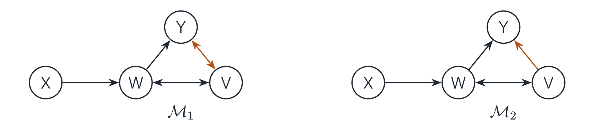
- 두 그래프는 같은 골격을 가지며, 비차폐 충돌자도 \(\langle X, W, V \rangle\) 하나로 동일합니다. (\(\langle W, V, Y \rangle\)는 삼각형 안에 있으므로 비차폐가 아닙니다.)
- 그러나 \(\mathcal{M}_1\): \(X \perp\!\!\!\perp Y \mid \{W\}\)입니다. 경로 \(X \to W \leftrightarrow V \leftrightarrow Y\)가 충돌자 \(V\)에서 막히기 때문입니다.
- 반면 \(\mathcal{M}_2\): \(X \not\perp\!\!\!\perp Y \mid \{W\}\)입니다. \(X \to W \leftrightarrow V \to Y\)에서 \(V\)는 비충돌자인데 조건화되지 않았으므로 열려 있습니다.
차이는 오직 삼각형 속에 숨은 \(V\)의 충돌자 지위입니다. 이를 읽어 내는 장치가 필요합니다.
4.3 판별 경로 (Discriminating Path)
경로 \(p = \langle X, Q_1, \dots, Q_k, V, Y \rangle\) (\(k \ge 1\))가 \(V\)에 대한 판별 경로이다 \(\iff\)
- \(X\)와 \(Y\)는 비인접이다.
- \(X\)와 \(V\) 사이의 모든 \(Q_i\)는 \(p\) 위에서 충돌자이면서 동시에 \(Y\)의 부모이다.
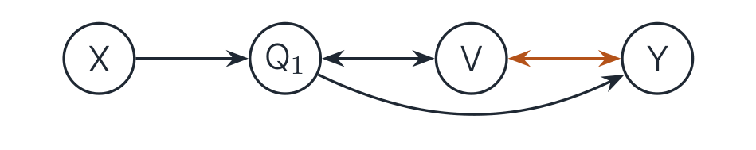
직관: \(X, Y\)를 분리하는 모든 집합은 \(Q_1, \dots, Q_k\)를 반드시 포함해야 합니다. 그러면 남는 것은 \(V\)의 포함 여부뿐이고, 다음이 성립합니다.
\[ V \text{가 비충돌자} \iff V \in (\text{어떤/모든}) \ \mathrm{sepset}(X, Y) \]
숨어 있던 지위가 CI로 노출되는 것입니다.
4.4 MAG 동치 정리
정리 (Spirtes–Richardson 1996/1997; Ali et al. 2009에 재수록). 두 MAG가 마르코프 동치 \(\iff\)
- 같은 골격을 갖는다.
- 같은 비차폐 충돌자를 갖는다.
- 두 그래프 모두에서 꼭짓점 \(V\)의 판별 경로인 모든 경로에 대해, \(V\)의 충돌자 지위가 같다.
- 조건 3의 한정에 주의해야 합니다. 한쪽에서만 판별 경로인 경로도 있을 수 있으므로, 비교는 공통 경로에서만 이루어집니다.
- 앞의 \(\mathcal{M}_1, \mathcal{M}_2\)에서 \(\langle X, Q_1 = W, V, Y \rangle\)는 양쪽 공통 판별 경로인데 \(V\)의 지위가 다릅니다. 따라서 동치가 아니며, 이는 앞서 확인한 CI 차이와 정확히 일치합니다.
- Ali et al. (2009)의 주정리는 순서를 가진 충돌자(colliders with order)에 대한 재귀적 특성화이며, 이를 통해 동치 판정을 다항 시간에 수행할 수 있습니다.
4.5 PAG — 동치류의 대표 그래프
\([\mathcal{M}]\)을 \(\mathcal{M}\)과 동치인 MAG 전체라 하자. \([\mathcal{M}]\)의 PAG \(\mathcal{P}\)는 같은 골격을 갖고, \([\mathcal{M}]\)의 모든 member에서 일치하는 마크만 꼬리/화살촉으로 표시하며, 나머지는 원 \(\circ\)로 둔다.
엣지 종류는 6가지입니다: \(\to\), \(\leftrightarrow\), \(-\), \(\circ\!\!\to\), \(\circ\!\!-\!\!\circ\), \(\circ\!\!-\).
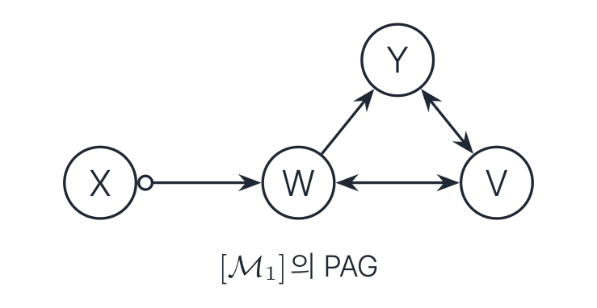
4.6 CPDAG vs PAG — 같은 데이터, 다른 겸손함
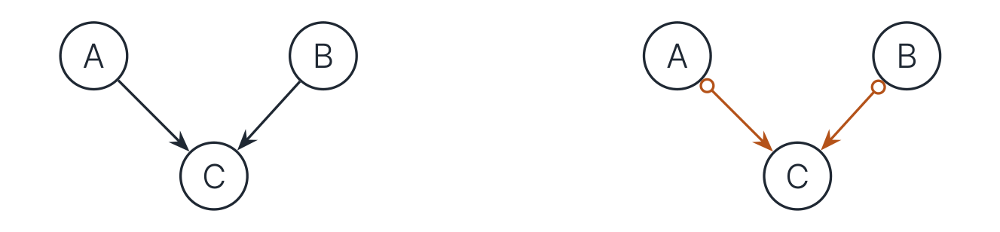
같은 CI(\(A \perp\!\!\!\perp B\), 나머지 종속)에서 출발했는데도 결론이 다릅니다.
- CPDAG는 \(A \to C\)의 꼬리까지 주장합니다. 즉 “\(A\)는 \(C\)의 원인”이라고 말합니다. 이는 인과충분성 가정(잠재 교란 없음)이 준 보너스입니다.
- PAG는 화살촉만 주장합니다. 즉 “\(C\)는 \(A\)의 원인이 아니다”까지만 말합니다. \(A \to C\)인지 \(A \leftrightarrow C\)인지는 데이터가 가르지 못합니다.
CPDAG의 꼬리 중 상당수는 데이터가 아니라 가정에서 옵니다. PAG는 그 가정을 빼고 데이터 몫만 남긴 것이므로, 원이 많다는 것은 그래프가 열등하다는 뜻이 아니라 주장의 근거를 정확히 지키고 있다는 뜻입니다. 이 관점은 Part 6의 마크 의미론 최종판에서 다시 확인됩니다.
Part 5. FCI — 데이터에서 PAG로 (FCI: From Data to PAG)
5.1 문제 설정과 가정
- 진짜 세계: \(\mathbf{O} \cup \mathbf{L} \cup \mathbf{S}\) 위의 DAG \(\mathcal{G}\) (미지)
- 주어진 것: \(\mathbf{O}\) 위의 CI 오라클 (\(X \perp\!\!\!\perp Y \mid \mathbf{Z} \cup \mathbf{S}\) 질의 가능)
- 가정: \(P(\mathbf{O}, \mathbf{L}, \mathbf{S})\)가 \(\mathcal{G}\)에 대해 마르코프 + 충실 \(\Rightarrow\) CI \(\iff\) \(\mathcal{G}\)의 d/m-분리
- 목표 출력: \(\mathcal{M}_{\mathcal{G}}\)의 동치류를 나타내는 PAG
전략의 뼈대는 PC와 같습니다. ① CI 검정으로 인접 구조(골격)를 복원하고 \(\to\) ② 충돌자 방향을 정하고(R0) \(\to\) ③ 규칙으로 마크를 전파합니다(R1–R10). 다만 잠재변수 때문에 ①에 추가 단계(Possible-D-SEP)가 필요해집니다.
유한 표본에서는 CI 오라클 대신 통계 검정(Fisher-z, 커널 CI 등)을 쓰지만, 이 자료에서는 오라클을 기준으로 논의합니다.
5.2 FCI 파이프라인 — 다섯 단계
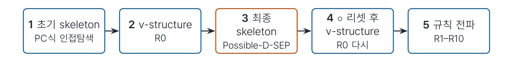
- ①·③단계에서만 CI 검정을 수행하고, 나머지는 그래프 연산입니다.
- ③단계가 FCI를 PC와 다르게 만드는 곳입니다.
- ③단계 후 잔존 엣지를 전부 \(\circ\!\!-\!\!\circ\)로 리셋하고 R0부터 다시 시작합니다. ②단계의 화살촉은 최종 골격에서 더는 보장되지 않기 때문입니다.
단계 구분은 Colombo et al. (2012)의 정식화를 따릅니다.
5.3 Step 1 — 초기 골격, PC처럼
- 완전 그래프(모든 엣지 \(\circ\!\!-\!\!\circ\))에서 시작합니다.
- \(l = 0, 1, 2, \dots\) 크기 순서로, 인접 쌍 \((X_i, X_j)\)마다 \(\mathbf{Y} \subseteq \mathrm{adj}(X_i) \setminus \{X_j\}\) (또는 \(X_j\) 쪽), \(|\mathbf{Y}| = l\)에 대해 \(X_i \perp\!\!\!\perp X_j \mid \mathbf{Y}\)를 검사합니다.
- 독립이 나오면 엣지를 삭제하고 \(\mathrm{sepset}(X_i, X_j) \leftarrow \mathbf{Y}\)를 기록합니다.
DAG에서 비인접인 \(X, Y\)는 항상 \(\mathrm{pa}(X)\) 또는 \(\mathrm{pa}(Y)\)로 분리됩니다. 즉 분리집합이 이웃 안에 있습니다. 그래서 이웃의 부분집합만 훑어도 충분했습니다.
잠재변수가 있으면 이 성질이 깨집니다.
5.4 함정 — 분리집합이 이웃 밖에 있을 수 있다
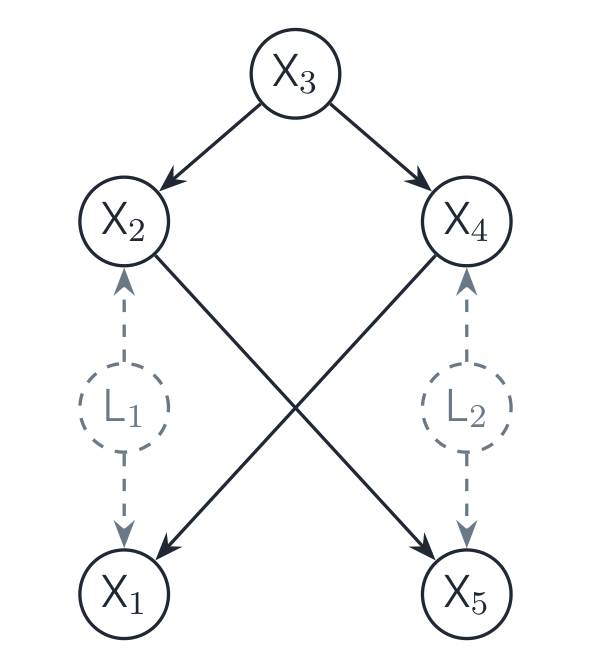
Colombo et al. (2012, Ex. 1)의 축약판입니다.
- \(X_1 \perp\!\!\!\perp X_5 \mid \{X_2, X_3, X_4\}\)이며, 이것이 유일한 분리입니다.
- 이유: 경로 \(X_1 \leftarrow L_1 \to X_2 \leftarrow X_3 \to X_4 \leftarrow L_2 \to X_5\)에서 충돌자 \(X_2, X_4\)를 조건화하면 열리고, 닫으려면 \(X_3\)가 필요합니다.
- 그런데 \(X_3\)는 \(X_1\)과도 \(X_5\)와도 비인접입니다. 따라서 이웃 부분집합 탐색으로는 영원히 시도되지 않습니다.
- Step 1 결과: 가짜 엣지 \(X_1 \circ\!\!-\!\!\circ X_5\)가 남습니다.
여기서 \(X_1\)의 MAG 이웃은 \(\{X_2, X_4\}\)이고 \(X_5\)도 \(\{X_2, X_4\}\)이므로, 분리집합 \(\{X_2, X_3, X_4\}\)는 어느 쪽 이웃에도 담기지 않습니다.
5.5 Possible-D-SEP — 분리집합 후보의 계산 가능한 상계
Step 2까지 끝난 그래프 \(\mathcal{C}\)에서 \[X_k \in \mathrm{pds}(X_i) \iff X_i\text{–}X_k \text{ 경로 } \pi \text{가 존재하여, } \pi \text{ 위 모든 연속 삼중항 } \langle X_m, X_l, X_h \rangle \text{에서}\] \[X_l \text{이 충돌자이거나 그 삼중항이 삼각형(세 쌍 모두 인접)이다.}\]
- 직관: “충돌자일 가능성을 부정하지 못하는 경로”로 닿는 모든 점, 즉 진짜 \(\mathrm{D\text{-}SEP}\)의 계산 가능한 상위집합(superset)입니다.
- Step 3: 인접 쌍 \((X_i, X_j)\)마다 \(\mathbf{Y} \subseteq \mathrm{pds}(X_i) \setminus \{X_i, X_j\}\) (그리고 \(X_j\) 쪽)를 전부 재검사합니다.
- 나비 그래프에 적용하면: \(\mathrm{pds}(X_1) \supseteq \{X_2, X_3, X_4, X_5\}\)입니다(\(X_3\)는 \(X_1 \ast\!\!\to X_2 \leftarrow\!\!\ast\, X_3\)라는 충돌자 경로로 진입합니다). 따라서 \(\{X_2, X_3, X_4\}\)가 시도되고 가짜 엣지가 삭제됩니다. ✓
- Step 4: 이후 잔존 엣지를 전부 \(\circ\!\!-\!\!\circ\)로 리셋한 뒤, 갱신된 \(\mathrm{sepset}\)으로 R0를 재적용합니다(Colombo et al. 2012, §3.1).
5.6 R0 — 충돌자 방향 결정
R0. 비차폐 삼중항 \(X_i \ast\!\!-\!\!\circ X_j \circ\!\!-\!\!\ast X_k\)에서 \(X_j \notin \mathrm{sepset}(X_i, X_k)\)이면 \(X_i \ast\!\!\to X_j \leftarrow\!\!\ast\, X_k\)로 방향을 정한다.
- 근거: \(X_j\) 없이 분리되었다는 것은 \(X_j\)가 그 경로를 여는 쪽, 즉 충돌자라는 뜻입니다.
- 끝점 마크는 건드리지 않습니다(\(\circ\) 유지). DAG의 \(X_i \to X_j \leftarrow X_k\)와 달리, \(X_i\)가 원인인지 교란인지는 아직 모르기 때문입니다.
이하 규칙의 도해는 와일드카드 \(\ast\)를 \(\circ\) 등으로 실체화한 대표 특수 사례이며, 일반형은 각 규칙의 텍스트 진술이 기준입니다.
5.7 R1 · R2 — 국소 전파
“충돌자였다면 이미 R0가 잡았을 것”이라는 논리를 반복 사용합니다.
R1. \(X_i \ast\!\!\to X_j \circ\!\!-\!\!\ast\, X_k\)이고 \(X_i, X_k\)가 비인접이면 \(\Rightarrow\) \(X_j \to X_k\).
R2. \(X_i \to X_j \ast\!\!\to X_k\) 또는 \(X_i \ast\!\!\to X_j \to X_k\)이고, \(X_i \ast\!\!-\!\!\circ X_k\)이면 \(\Rightarrow\) \(X_i \ast\!\!\to X_k\).
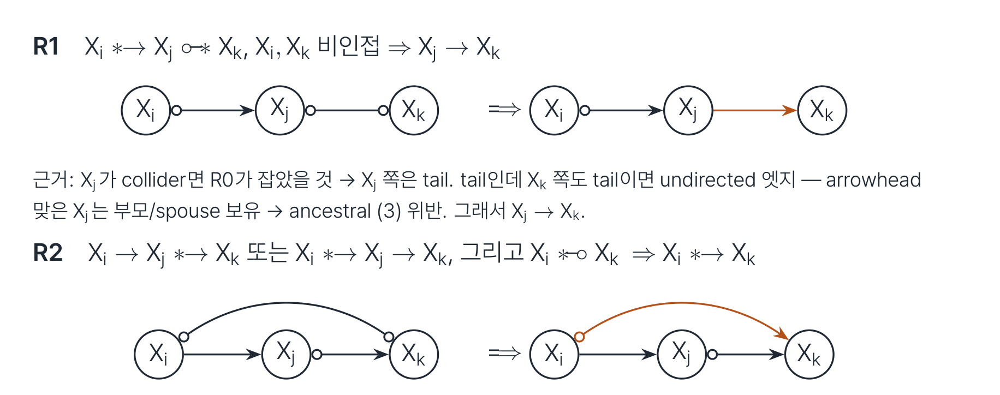
- R1의 근거: \(X_j\)가 충돌자라면 R0가 이미 잡았을 것이므로 \(X_j\) 쪽은 꼬리입니다. 그런데 꼬리인데 \(X_k\) 쪽도 꼬리이면 무방향 엣지가 되고, 화살촉을 맞은 \(X_j\)는 부모/배우자를 보유하므로 조상 그래프 조건 (3)을 위반합니다. 따라서 \(X_j \to X_k\)입니다.
- R2의 근거: \(X_k\) 쪽이 꼬리(\(X_k \in \mathrm{an}(X_i)\))라면 \(X_i \to X_j \ast\!\!\to X_k\)와 합쳐 (준) 유향 순환이 만들어집니다.
5.8 R3 — 이중 충돌자 사이
R3. \(X_i \ast\!\!\to X_j \leftarrow\!\!\ast\, X_k\), \(X_i \ast\!\!-\!\!\circ X_l \circ\!\!-\!\!\ast\, X_k\), \(X_i, X_k\) 비인접, \(X_l \ast\!\!-\!\!\circ X_j\)이면 \(\Rightarrow\) \(X_l \ast\!\!\to X_j\).
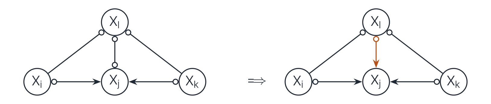
- 근거: 비차폐 삼중항 \(\langle X_i, X_l, X_k \rangle\)가 R0에서 충돌자로 잡히지 않았으므로 \(X_l\)은 비충돌자이고, 따라서 \(X_l \in \mathrm{sepset}(X_i, X_k)\)입니다. 그런데 \(X_l\) 쪽이 꼬리(\(X_l \in \mathrm{an}(X_j)\))라면, 충돌자 \(X_j\)를 여는 조건집합에 \(X_l\)이 들어가 \(\mathrm{sepset}\)과 모순됩니다.
5.9 R4 — 판별 경로 규칙
Part 4에서 본 장치가 알고리즘으로 들어옵니다.
R4. \(u = \langle X, \dots, Q_k, V, Y \rangle\)가 \(V\)에 대한 판별 경로이고 \(V \circ\!\!-\!\!\ast\, Y\)일 때:
- \(V \in \mathrm{sepset}(X, Y)\) \(\Rightarrow\) \(V \to Y\)
- \(V \notin \mathrm{sepset}(X, Y)\) \(\Rightarrow\) \(Q_k \leftrightarrow V \leftrightarrow Y\)
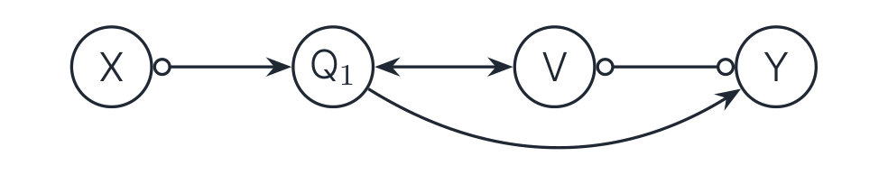
- Part 4에서 봤듯 \(X, Y\)의 분리집합은 \(Q\)들을 강제로 포함하므로, \(V\)의 포함 여부가 \(V\)의 충돌자 지위를 판독합니다.
- 이 규칙까지 넣어야 화살촉이 완전(complete)해집니다(R0–R4; Ali et al. 2005).
5.10 R5 · R6 · R7 — 선택 편향 전용
무방향 엣지가 가능할 때만 필요한 규칙들입니다.
- R5. \(X_i \circ\!\!-\!\!\circ X_j\)이고, 전부 \(\circ\!\!-\!\!\circ\)인 비피복(uncovered) 경로 \(\langle X_i, \gamma, \dots, \theta, X_j \rangle\)가 존재하며 \(X_i, \theta\) 비인접, \(X_j, \gamma\) 비인접이면 \(\Rightarrow\) 그 엣지들과 \(X_i\)–\(X_j\)를 전부 무방향(\(-\))으로 바꿉니다.
- R6. \(X_i - X_j \circ\!\!-\!\!\ast\, X_k\) \(\Rightarrow\) \(X_j\) 쪽 마크를 꼬리로.
- R7. \(X_i \, -\!\!\circ X_j \circ\!\!-\!\!\ast\, X_k\)이고 \(X_i, X_k\) 비인접 \(\Rightarrow\) \(X_j\) 쪽 꼬리로.
여기서 비피복 경로란 연속 삼중항이 모두 비차폐인(삼각형이 없는) 경로입니다. R5의 근거는 어느 한 마크라도 화살촉이면 R1 연쇄로 (준) 순환이 발생한다는 것입니다.
\(\mathbf{S} = \emptyset\)이면 무방향 엣지 자체가 없으므로 R5–R7은 한 번도 발동하지 않습니다. no-selection 옵션이 있는 구현에서는 아예 끌 수 있습니다(예: pcalg의 selectionBias=FALSE).
5.11 R8 · R9 — 꼬리 규칙
원을 꼬리로 확정하는 두 가지 방법입니다.
R8. \(X_i \to X_j \to X_k\) 또는 \(X_i \, -\!\!\circ X_j \to X_k\)이고, \(X_i \circ\!\!\to X_k\)이면 \(\Rightarrow\) \(X_i \to X_k\).
R9. \(X_i \circ\!\!\to X_k\)이고, \(\langle X_i, X_j, \dots, X_k \rangle\)가 비피복 가능 유향 경로이며 \(X_j, X_k\)가 비인접이면 \(\Rightarrow\) \(X_i \to X_k\).
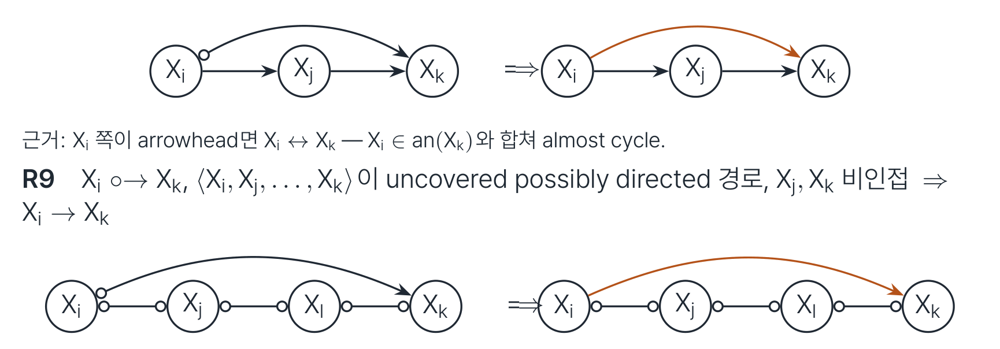
여기서 가능 유향(possibly directed)이란 각 엣지의 경로상 앞쪽(\(X_i\)에 가까운) 끝에 화살촉이 없음을 뜻합니다.
- R8의 근거: \(X_i\) 쪽이 화살촉이면 \(X_i \leftrightarrow X_k\)인데, \(X_i \in \mathrm{an}(X_k)\)와 합쳐 준 유향 순환이 됩니다.
- R9의 근거: \(X_i \leftrightarrow X_k\)였다면 R1 연쇄가 경로를 \(X_i \to \cdots \to X_k\)로 만들어 준 유향 순환이 됩니다.
5.12 R10 — 두 갈래 합류
꼬리 완전성을 위한 마지막 조각입니다.
R10. \(X_i \circ\!\!\to X_k\), \(\beta \to X_k \leftarrow \theta\), \(\pi_1 = X_i\)에서 \(\beta\)로 가는 비피복 가능 유향 경로, \(\pi_2 = X_i\)에서 \(\theta\)로 가는 비피복 가능 유향 경로라 하자. \(\mu, \omega\)를 각각 \(\pi_1, \pi_2\)에서 \(X_i\)의 바로 다음 노드라 할 때, \(\mu \ne \omega\)이고 \(\mu, \omega\)가 비인접이면 \(\Rightarrow\) \(X_i \to X_k\).
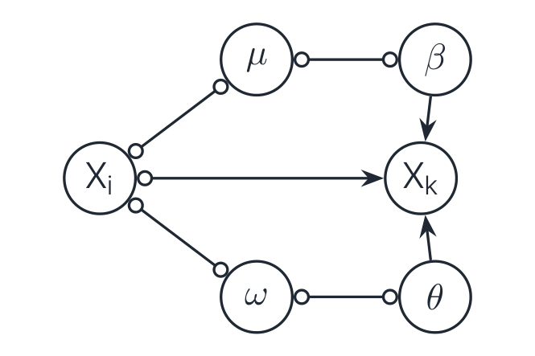
- 근거: \(X_i \leftrightarrow X_k\)라면 두 경로가 모두 \(X_i\)에서 나가는 방향으로 강제되고(\(\mu, \omega\)가 비인접이므로 충돌자가 될 수 없습니다), \(X_i \in \mathrm{an}(X_k)\)가 되어 준 유향 순환이 발생합니다.
5.13 건전성과 완전성 (Soundness and Completeness)
PDS 단계까지 포함한 FCI + R0–R10 (augmented FCI)의 출력은, CI 오라클 하에서:
- 건전(Sound): 표시된 모든 꼬리/화살촉은 동치류 전체에서 불변인 마크이다.
- 완전(Complete): 불변인 마크는 빠짐없이 표시된다. 즉 남은 \(\circ\)마다 양쪽 member가 실제로 존재한다.
즉 출력은 최대 정보 PAG입니다.
- 선택 편향이 없으면 R5–R7은 생략 가능합니다(발동 자체가 없습니다).
- 역사: FCI 골격과 건전성(Spirtes–Meek–Richardson 1995/1999) \(\to\) 화살촉 완전성(Ali et al. 2005) \(\to\) 꼬리 규칙 R8–R10과 전체 완전성(Zhang 2008).
5.14 Worked Example — 4변수, 잠재 교란 하나
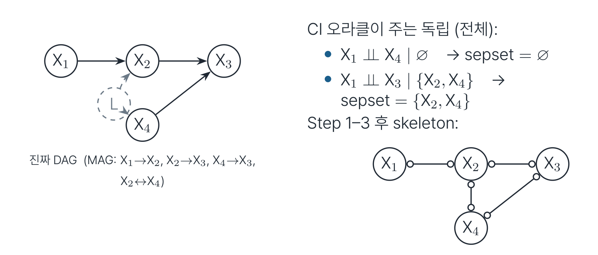
CI 오라클이 주는 독립은 다음 둘뿐입니다.
- \(X_1 \perp\!\!\!\perp X_4 \mid \emptyset\) \(\to\) \(\mathrm{sepset} = \emptyset\)
- \(X_1 \perp\!\!\!\perp X_3 \mid \{X_2, X_4\}\) \(\to\) \(\mathrm{sepset} = \{X_2, X_4\}\)
이제 규칙을 순서대로 적용합니다.
- R0: \(\langle X_1, X_2, X_4 \rangle\)가 비차폐이고 \(X_2 \notin \mathrm{sepset}(X_1, X_4) = \emptyset\) \(\to\) \(X_1 \circ\!\!\to X_2 \leftarrow\!\!\circ X_4\)
- R1: \(X_1 \ast\!\!\to X_2 \circ\!\!-\!\!\circ X_3\)이고 \(X_1, X_3\) 비인접 \(\to\) \(X_2 \to X_3\)
- R2: \(X_4 \ast\!\!\to X_2 \to X_3\)이고 \(X_4 \circ\!\!-\!\!\circ X_3\) \(\to\) \(X_4 \circ\!\!\to X_3\)
- R4: \(\langle X_1, X_2, X_4, X_3 \rangle\)이 \(X_4\)에 대한 판별 경로입니다(\(X_2\)가 충돌자이면서 \(X_3\)의 부모). \(X_4 \in \mathrm{sepset}(X_1, X_3)\)이므로 \(\to\) \(X_4 \to X_3\)
한편 \(\langle X_1, X_2, X_3 \rangle\)은 \(X_2 \in \mathrm{sepset}(X_1, X_3)\)이므로 R0가 발동하지 않습니다(비충돌자).
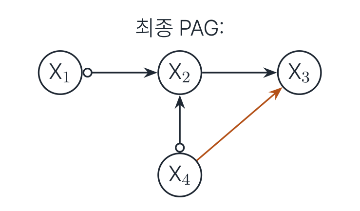
5.15 FCI 가족 — 실전에서 만나는 변종들
| 알고리즘 | 아이디어 | 대가 |
|---|---|---|
| Anytime FCI (Spirtes 2001) | 조건집합 크기를 \(\le K\)로 제한 | 정보 손실, 건전성은 유지 |
| RFCI (Colombo et al. 2012) | PDS 생략, 국소 검사로 대체 | 클래스가 합쳐질 수 있음 |
| FCI+ (Claassen et al. 2013) | 희소하면 다항 시간 + 완전 | 구현 복잡 |
| FCI-stable (Colombo–Maathuis 2014) | 순서 비의존 골격 | — |
| conservative/majority | 비차폐 삼중항 재검증 | 일부 마크 유보 |
| GFCI (Ogarrio et al. 2016) | 점수 탐색 + FCI 후처리 | 가정 추가 |
공통 교훈: 유한 표본에서 CI 오류는 골격 단계에서 가장 아픕니다. 그래서 변종 대부분이 검사 수 · 순서 · 안정성을 손봅니다.
Part 6. PAG 읽기 (Reading a PAG)
6.1 마크 의미론, 최종판
완전성 덕분에 세 기호의 뜻이 깔끔하게 닫힙니다. PAG \(\mathcal{P}\)의 엣지 \(A \ast\!\!-\!\!\ast B\)에서 \(B\) 쪽 마크가:
| 마크 | 뜻 (동치류의 모든 member에서) |
|---|---|
| 화살촉 | \(B \notin \mathrm{an}(A \cup \mathbf{S})\) — 모든 member에서 비조상 |
| 꼬리 | \(B \in \mathrm{an}(A \cup \mathbf{S})\) — 모든 member에서 조상 |
| 원 | 갈린다 — 조상인 member도, 아닌 member도 실제로 존재 |
- “모든 member”는 MAG뿐 아니라, 그 MAG들이 표현하는 모든 DAG 세계(잠재 · 선택 포함)로 내려갑니다.
- 그래서 PAG의 화살촉 하나는 “데이터가 지지하는 인과적 단언”이고, 원은 “데이터로는 못 가른다”는 정직한 고백입니다.
6.2 가능 유향 (Possibly Directed) — “원인일 가능성”의 어휘
- 경로 \(\langle X = V_0, V_1, \dots, V_k = Y \rangle\)가 가능 유향 \(\iff\) 각 엣지 \(V_i\)–\(V_{i+1}\)에서 \(V_i\) 쪽(\(X\)에 가까운 끝)에 화살촉이 없다(예: \(X \circ\!\!-\!\!\circ A \circ\!\!\to Y\)).
- \(\mathrm{PossAn}(Y)\) \(=\) \(Y\)로 가는 가능 유향 경로가 있는 노드들, 즉 “원인일 가능성이 남은” 집합입니다.
- 반대로 가능 유향 경로가 하나도 없으면 확정 비조상이며, 효과 없음을 데이터가 보증합니다.
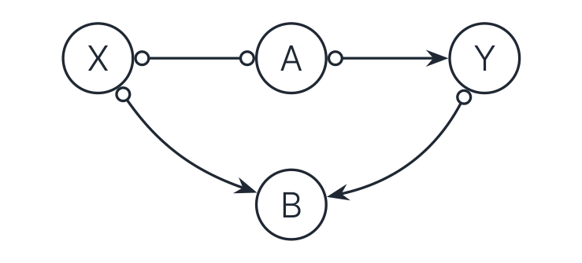
6.3 PAG에서 CI 읽기 — 확정 상태 (Definite Status)
원이 있어도 m-분리를 읽을 수 있습니다. 경로 위 비끝점 \(V\)가:
- 확정 충돌자(definite collider): 두 엣지 모두 \(V\)로 화살촉이 들어온다.
- 확정 비충돌자(definite non-collider): 한 엣지가 \(V\)에서 꼬리로 나가거나, 양쪽 다 \(V\) 쪽이 원이면서 이웃 두 점이 비인접이다(R0 논리로 충돌자가 배제됨).
- 어느 쪽도 아니면 지위 미정이며, 그 경로는 판정에 쓰지 않습니다.
모든 비끝점이 확정인 경로를 확정 상태 경로(definite status path)라 합니다.
PAG에서 \(\mathbf{Z}\)가 확정 상태 경로를 전부 막으면, 동치류의 모든 member에서 \(X \perp\!\!\!\perp Y \mid \mathbf{Z}\)입니다. 즉 CI 판독이 member 불변으로 가능합니다.
이 어휘(Zhang 2008; Perković et al. 2018)로 Part 7의 조정 기준이 정확히 진술됩니다.
6.4 가시적 엣지 (Visible Edge)
MAG/PAG의 방향 엣지 \(A \to B\)가 가시적(visible)이다 \(\iff\) \(B\)와 비인접인 어떤 \(V\)가 있어
- (i) \(V \ast\!\!\to A\) 엣지가 있거나,
- (ii) \(V\)에서 \(A\)로 들어가는 충돌자 경로가 있고 그 위 모든 비끝점이 \(B\)의 부모이다.
그렇지 않으면 비가시적(invisible)입니다.
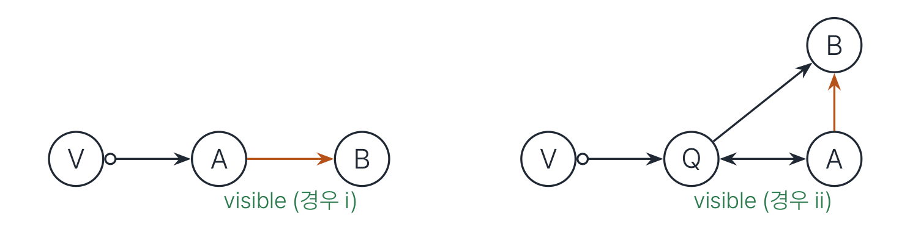
직관(경우 i): \(A, B\)가 잠재 교란되어 있다면 \(V \ast\!\!\to A \leftrightarrow B\) 꼴의 유도 경로가 생겨 \(V\)–\(B\)가 인접했어야 합니다. 비인접이 교란을 배제하는 것입니다.
6.5 가시 vs 비가시 — 같은 PAG 안에서 갈린다
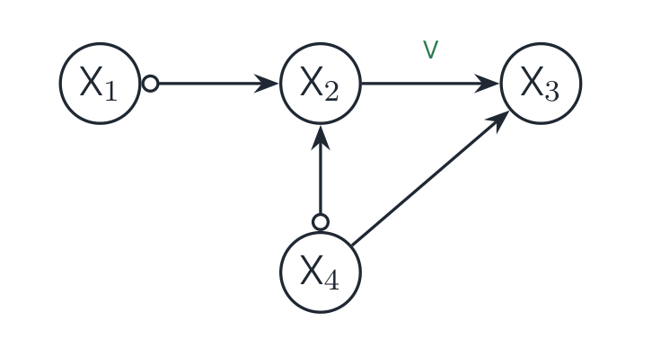
- \(X_2 \to X_3\): 가시적입니다. 증인은 \(X_1\)입니다(\(X_1 \ast\!\!\to X_2\)이고 \(X_1\)은 \(X_3\)와 비인접). \(\to\) 모든 member에서 \(X_2 \to X_3\)이고 둘 사이에 잠재 교란이 없습니다.
- \(X_4 \to X_3\): 비가시적입니다. \(X_4\)로 들어오며 조건을 채우는 증인이 없습니다. \(\to\) \(X_4 \to X_3\)이면서 \(X_4, X_3\)가 교란된 DAG 세계가 같은 PAG를 냅니다.
같은 그래프의 두 방향 엣지가 보증 수준이 다르다는 점이 핵심이며, 이 차이는 Part 7의 조정에서 결정적입니다.
6.6 읽기 연습
Part 4의 PAG(\(X \circ\!\!\to W\), \(W \leftrightarrow V\), \(W \to Y\), \(V \leftrightarrow Y\))를 대상으로 세 가지를 물어보겠습니다.
- \(\mathrm{PossAn}(Y)\)는? \(\to\) \(\{Y, W, X\}\)입니다. \(X \circ\!\!\to W \to Y\)가 가능 유향이므로(각 엣지의 경로상 앞쪽 끝에 화살촉이 없습니다) \(X\)까지 포함됩니다.
- \(W \to Y\)는 가시적인가? \(\to\) 가시적입니다. 증인은 \(X\)입니다(\(X \ast\!\!\to W\)이고 \(X\)와 \(Y\)는 비인접).
- \(V\)는 \(Y\)의 원인일 수 있는가? \(\to\) 불가능합니다. \(V\)의 모든 엣지가 \(V\)로 들어오므로(화살촉) \(V \notin \mathrm{PossAn}(Y)\), 즉 확정 비조상입니다.
6.7 더 멀리 — PAG 위의 do-계산법
- Zhang 2008 (JMLR): MAG/PAG용 do-계산법의 일반화입니다. 가시/비가시 구분이 규칙의 전제 조건에 들어갑니다.
- Jaber et al. 2022: PAG에서 완전한 효과 식별 알고리즘(CIDP)입니다.
- 조정(adjustment)은 그중 “한 방에 되는” 특수하고 실용적인 경우이며, 다음 Part의 주제입니다.
이제 PAG를 읽을 수 있습니다. 조상 주장(마크), CI(확정 상태), 교란 배제(가시성). 이 셋을 조합하면 효과를 식별할 수 있습니다.
Part 7. Adjustment — PAG에서 효과 식별 (Adjustment: Effect Identification in PAGs)
7.1 목표 — 그래프도 모르면서 조정하기
\(\mathbf{Z}\)가 PAG \(\mathcal{P}\)에서 \((X, Y)\)의 조정집합(adjustment set)이다 \(\iff\) \(\mathcal{P}\)가 표현하는 모든 DAG 세계(잠재변수 포함)에서
\[ P(y \mid do(x)) = \sum_{\mathbf{z}} P(y \mid x, \mathbf{z})\, P(\mathbf{z}) \]
가 성립한다. (전제: \(X, Y, \mathbf{Z}\)는 쌍마다 서로소이고 \(X, Y \ne \emptyset\). 이 Part에서는 선택 편향이 없다고 가정합니다 — \(\mathbf{S} = \emptyset\).)
- DAG 하나에서의 뒷문 기준보다 훨씬 센 요구입니다. 어느 member가 진실이어도 같은 식이 맞아야 하기 때문입니다.
- 좋은 소식은 판정 기준(GAC)과 후보 집합(Adjust)이 완전하게 알려져 있다는 것입니다(Perković–Textor–Kalisch–Maathuis 2015, 2018).
조정 공식의 단계별 유도
위 식은 결과만 제시되어 있으니, 가정 \(\to\) 정의 \(\to\) 중간 단계 \(\to\) 최종식의 흐름으로 풀어 보겠습니다. (엄밀한 MAG/PAG 버전은 Perković et al. (2018)에 있고, 여기서는 표준 뒷문 논증을 따라갑니다.)
1단계 (전확률 법칙). \(\mathbf{Z}\)에 대해 주변화합니다.
\[ P(y \mid do(x)) = \sum_{\mathbf{z}} P(y \mid do(x), \mathbf{z})\, P(\mathbf{z} \mid do(x)) \]
2단계 (금지 집합 조건 \(\to\) 둘째 항). 뒤에 나올 GAC 조건 (1)에 의해 \(\mathbf{Z} \cap \mathrm{Forb}(X, Y, \mathcal{P}) = \emptyset\)이므로, \(\mathbf{Z}\)의 어떤 원소도 \(X\)에서 효과가 흘러갈 수 있는 지점의 후손이 아닙니다. 따라서 \(X\)에 개입해도 \(\mathbf{Z}\)의 분포는 바뀌지 않습니다.
\[ P(\mathbf{z} \mid do(x)) = P(\mathbf{z}) \]
3단계 (순응성 + 차단 조건 \(\to\) 첫째 항). GAC 조건 (2)에 의해 \(\mathbf{Z}\)가 모든 비인과 경로를 막고, 조건 (0)(순응성)에 의해 \(X\)에서 나가는 첫 엣지가 가시적이므로 \(X\)와 \(Y\) 사이에 잠재 교란이 남아 있지 않습니다. 따라서 \(\mathbf{Z}\)로 조건화한 뒤에는 \(X\)를 관측하는 것과 \(X\)에 개입하는 것이 같은 \(Y\) 분포를 줍니다.
\[ P(y \mid do(x), \mathbf{z}) = P(y \mid x, \mathbf{z}) \]
4단계 (최종식). 2·3단계를 1단계에 대입하면 목표 식을 얻습니다. \(\blacksquare\)
이 유도에서 알 수 있듯, GAC의 세 조건은 각각 유도의 한 단계씩을 담당합니다. 조건 (0)이 없으면 3단계가, 조건 (1)이 없으면 2단계가, 조건 (2)가 없으면 다시 3단계가 무너집니다.
7.2 첫 관문 — 순응성 (Amenability)
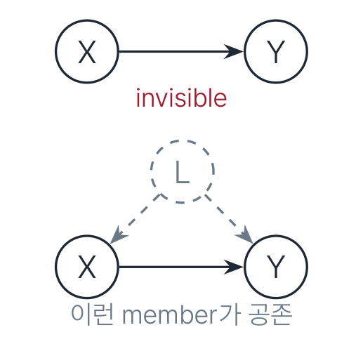
- \(X \to Y\)가 비가시적이면, 같은 PAG를 내는 세계 중에 교란된 세계가 반드시 있습니다.
- 그 세계에서는 어떤 \(\mathbf{Z} \subseteq \mathbf{O}\)도 뒷문을 막지 못합니다(\(L\)은 관측 밖). \(\to\) 조정 실패입니다.
\(\mathcal{P}\)가 \((X, Y)\)에 순응적(amenable)이다 \(\iff\) \(X\)에서 \(Y\)로 가는 모든 proper 가능 유향 경로가 가시적인 \(X \to \cdot\) 엣지로 시작한다.
여기서 proper란 \(X\) 집합을 첫 노드에서만 지나는 경로를 뜻합니다(\(X\)가 단일 변수면 자동으로 만족됩니다).
7.3 일반화 조정 기준 (Generalized Adjustment Criterion, GAC)
\(\mathbf{Z}\)가 \((X, Y)\)의 조정집합 \(\iff\)
- (0) \(\mathcal{P}\)가 \((X, Y)\)에 순응적이다.
- (1) \(\mathbf{Z} \cap \mathrm{Forb}(X, Y, \mathcal{P}) = \emptyset\).
- (2) \(\mathbf{Z}\)가 \(X\)–\(Y\) 사이 모든 proper 확정 상태 비인과 경로를 막는다.
세 조건은 충분하고 동시에 필요합니다.
- 금지 집합은 다음과 같이 정의됩니다.
\[ \mathrm{Forb}(X, Y, \mathcal{P}) = \mathrm{PossDe}\big(\mathrm{cn}(X, Y)\big) \]
여기서 \(\mathrm{cn}\)은 proper 가능 유향 경로 위의 노드들(\(X\) 제외)입니다. 한 문장으로 옮기면 “효과가 흘러갈 가능성이 있는 지점과 그 후손은 조건화 금지”입니다. (\(X\) 자체의 배제는 \(\mathbf{Z}\)가 \(X, Y\)와 서로소라는 전제가 담당합니다.)
- 비인과 경로란 가능 유향이 아닌 경로입니다. 차단 판정은 Part 6의 확정 상태 어휘로 이루어지며, 같은 기준이 DAG/CPDAG/MAG에서도 그대로 작동합니다.
7.4 후보는 하나만 보면 된다 — Adjust
\[ \mathrm{Adjust}(X, Y, \mathcal{P}) = \mathrm{PossAn}(X \cup Y) \setminus \big(\mathrm{Forb}(X, Y, \mathcal{P}) \cup X \cup Y\big) \]
\(\mathcal{P}\)가 순응적이면: \[ \text{조정집합 존재} \iff \mathrm{Adjust}(X, Y, \mathcal{P}) \text{가 조정집합이다.} \]
- 존재 여부를 \(2^{|\mathbf{O}|}\)개 후보가 아니라 집합 하나 검사로 끝냅니다.
- 직관: “\(X\)나 \(Y\)의 (가능한) 조상만 다 넣되, 금지 구역은 뺀다.” 즉 DAG에서의 \(\mathrm{pa}(X)\) 조정에 해당하는 동치류 버전입니다.
- 크기 · 분산 최적화는 별개 문제입니다(§7.7 참조).
7.5 Worked Example — 같은 PAG, 갈리는 두 쌍
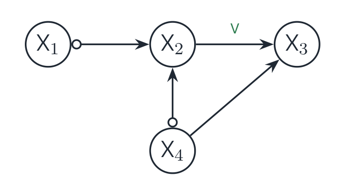
쌍 \((X_2, X_3)\) — 성공
- 순응적입니다 ✓ (\(X_2 \to X_3\)가 가시적). \(\mathrm{Forb} = \{X_3\}\)입니다.
- 비인과 경로는 \(X_2 \leftarrow\!\!\circ X_4 \to X_3\) 하나뿐이며 \(\to\) \(X_4\)로 차단됩니다.
- \(\mathbf{Z} = \{X_4\}\) (최소; \(\{X_1, X_4\} = \mathrm{Adjust}\)도 유효):
\[ P(x_3 \mid do(x_2)) = \sum_{x_4} P(x_3 \mid x_2, x_4)\, P(x_4) \]
쌍 \((X_4, X_3)\) — 실패
- \(X_4 \to X_3\)가 비가시적이므로 순응적이지 않습니다 \(\to\) 조정집합이 없습니다.
- 더 세게 말하면, \(X_4 \to X_3\)와 잠재 공통 부모가 공존하는 DAG(직접 보우)가 같은 PAG를 냅니다(Zhang 2008, Lem. 10). \(\to\) 식별 자체가 불가능합니다.
7.6 Worked Example — Adjust로 한 번에
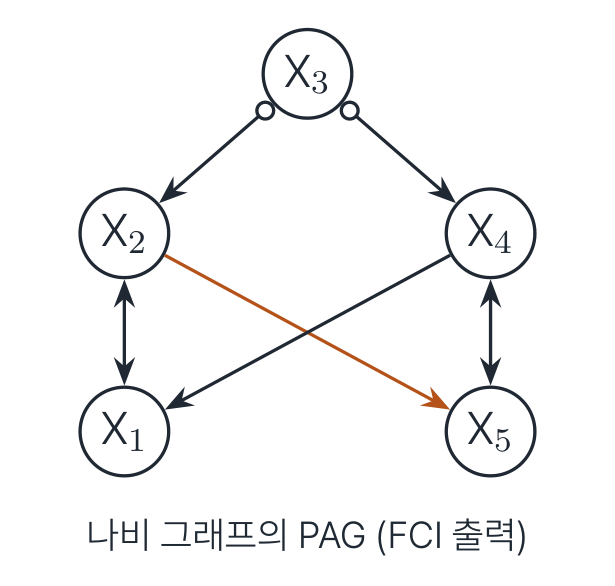
\((X, Y) = (X_2, X_5)\)에 대해 순서대로 계산해 보겠습니다.
- 순응성 ✓ (\(X_2 \to X_5\)가 가시적 — 증인은 \(X_1\))
- \(\mathrm{cn} = \{X_5\}\), 따라서 \(\mathrm{Forb} = \{X_5\}\)
- \(\mathrm{PossAn}(X_2 \cup X_5) = \{X_2, X_3, X_5\}\) \(\to\) \(\mathrm{Adjust} = \{X_3\}\)
- 검산: 비인과 경로 \(X_2 \leftarrow\!\!\circ X_3 \circ\!\!\to X_4 \leftrightarrow X_5\)는 \(X_3\)로 차단되고, \(X_2 \leftrightarrow X_1 \leftarrow X_4 \leftrightarrow X_5\)는 충돌자 \(X_1\)에서 자동 차단됩니다 ✓
\[ P(x_5 \mid do(x_2)) = \sum_{x_3} P(x_5 \mid x_2, x_3)\, P(x_3) \]
위 예에서 사실 \(\mathbf{Z} = \emptyset\)도 유효한 조정집합입니다. \(\mathrm{Adjust}\)는 존재 판정용 후보이지 최적해가 아닙니다. 어느 조정집합이 분산 측면에서 더 나은가는 완전히 별개의 문제이며, PAG에서는 그 “최적”의 정의부터가 아직 미해결입니다(§7.7).
7.7 Adjustment 너머 — 조정이 안 되면 끝인가?
아닙니다. 도구가 더 있습니다.
| 도구 | 무엇을 주나 | 완전성 |
|---|---|---|
| GAC + Adjust (Perković 2018) | 한 번의 조정식 | 조정으로 되는 한 완전 |
| 조건부 조정(conditional adjustment) (LaPlante–Perković 2024) | \(P(y \mid do(x), c)\) 조정식 | 해당 문제에 완전 |
| PAG do-계산법 (Zhang 2008) | 규칙 체계 | — |
| IDP / CIDP (Jaber et al. 2019, 2022) | 임의 식별식 | 완전(조건부까지) |
| 선택 편향 하 ID (Chen–Mooij 2026) | \(\mathbf{S} \ne \emptyset\) 확장 | 무조건부 완전 |
- 조정이 불가능해도 식별 가능한 경우가 있습니다(front-door 류). \(\to\) CIDP가 잡아 냅니다.
- 반대로 CIDP도 실패하면, 그 효과는 PAG 수준에서 비식별입니다. 그때는 부분 식별(bounds)이나 실험 설계로 넘어가야 합니다.
7.8 연구실 연구와의 접점 — 이 강의가 끝나는 곳에서 시작하는 질문들
- 효율: 유효한 \(\mathbf{Z}\)가 여럿일 때 분산 최적은 무엇인가? DAG/CPDAG에서는 O-집합 이론으로 해결되었고(Henckel et al. 2022; Smucler et al. 2022; Runge 2021), ADMG에서는 최적이 존재하지 않을 수도 있습니다. PAG에서는 “최적”의 정의부터 미해결입니다 — 서베이의 gap ①.
- 국소성: 전체 그래프 없이 \((X, Y)\) 주변만 배워서 조정까지 가는 문제입니다. 인과충분성 가정 하에서는 LDECC · MB-by-MB · SNAP이 있고, LOAD가 국소 최적 조정까지 해결했습니다. 잠재변수 하에서 같은 것을 하는 국소 알고리즘은 공백입니다 — gap ②.
- 일반 ID의 국소화: CIDP의 국소 버전은 열려 있습니다 — gap ③.
7.9 Part 7 요약
조정 판정은 결국 세 줄입니다.
- 모든 proper 인과 후보 경로가 가시적 엣지로 시작하는가? (순응성)
- \(\mathrm{Forb}\)을 피해서
- proper 비인과 확정 상태 경로를 다 막아라.
후보가 궁금하면 \(\mathrm{Adjust}(X, Y, \mathcal{P})\) 하나만 검사하면 됩니다. 그것이 안 되면 조정으로는 안 되는 것이고, 그때는 CIDP로, 그것도 안 되면 비식별입니다.
Part 8. 정리 · 문헌 · 도구 (Summary, Literature, and Tools)
8.1 Cheat Sheet A — 객체
| 개념 | 정의 요약 |
|---|---|
| mixed graph | \(\to\), \(\leftrightarrow\), \(-\); 쌍당 엣지 \(\le 1\); 충돌자는 마크로 판정 |
| ancestral | 유향/준 유향 순환 금지 + 무방향 끝점은 부모 · 배우자 금지 |
| MAG | ancestral + maximal (비인접 \(\iff\) 분리 가능 \(\iff\) 유도 경로 없음) |
| PAG | MAG 동치류의 대표; 불변 마크만 표시, 나머지 \(\circ\) |
| arrowhead at \(B\) | 모든 member에서 \(B \notin \mathrm{an}(A \cup \mathbf{S})\) |
| tail at \(A\) | 모든 member에서 \(A \in \mathrm{an}(B \cup \mathbf{S})\) |
| \(\leftrightarrow\) / \(-\) | 잠재 교란의 흔적 / 선택 편향의 흔적 |
8.2 Cheat Sheet B — 판정 도구
| 도구 | 판정 방법 |
|---|---|
| m-분리 | 비충돌자: \(\mathbf{Z}\) 안이면 막힘 / 충돌자: \(\mathrm{An}(\mathbf{Z})\) 안이면 열림 |
| 유도 경로 | primitive: 비끝점 전부 충돌자 \(\in \mathrm{an}(\{A,B\})\); \(\langle \mathbf{L}, \mathbf{S} \rangle\)-상대: 충돌자는 \(\mathrm{an}(\{A,B\} \cup \mathbf{S})\), 비충돌자는 \(\mathbf{L}\) 소속 \(\to\) 영구 종속 쌍 |
| 판별 경로 | 충돌자 · 부모 사슬 \(\langle X, Q_i, V, Y \rangle\) \(\to\) \(V \in \mathrm{sepset}\) \(\iff\) 비충돌자 |
| 동치 판정 | 골격 + 비차폐 충돌자 + 공통 판별 경로 충돌자 지위 |
| visible \(A \to B\) | \(B\) 비인접 증인이 \(A\)로 들어옴 \(\to\) 그 쌍엔 잠재 교란 없음 |
| amenable | proper 가능 유향 경로가 전부 가시적 엣지로 시작 |
| GAC | amenable + \(\mathbf{Z} \cap \mathrm{Forb} = \emptyset\) + proper 비인과 확정 상태 경로 차단 |
| Adjust | \(\mathrm{PossAn}(X \cup Y) \setminus (\mathrm{Forb} \cup X \cup Y)\); 존재 \(\iff\) 이게 유효 |
8.3 문헌 지도 — 한 줄 연대기
| 연도 | 저자 | 기여 |
|---|---|---|
| 1995/2000 | Spirtes et al.; SGS | FCI 원형 · 건전성 · PDS |
| 2002 | Richardson–Spirtes | 조상 그래프 원전(m-분리, MAG, 유일 완성) |
| 2005/2009 | Ali et al. (’05는 +Zhang) | 동치류 특성화, 화살촉 완전성 |
| 2008 | Zhang \(\times 2\) | R8–R10 + 완전성 (AIJ); visible · do-계산법 (JMLR) |
| 2012 | Colombo et al. | FCI 정식화 · RFCI · 고차원 일치성 |
| 2013/2014 | Claassen et al.; Colombo–Maathuis | FCI+ (다항 시간), 순서 비의존성 |
| 2015/2018 | Perković et al. | GAC + Adjust — 조정의 완전한 해결 |
| 2019/2022 | Jaber et al. | PAG ID/CIDP — 일반 식별의 완전한 해결 |
| 2024/2026 | LaPlante–Perković; Chen–Mooij | 조건부 조정; 선택 편향 하 ID |
8.4 도구 — 바로 굴려 볼 수 있는 구현들
- R
pcalg:fci(),rfci(),fciPlus(), 조정은adjustment()·gac()dagitty: DAG · no-selection MAG/PAG 조정집합 탐색
- Python
causal-learn:fci(PAG 출력)dodiscover/pywhy-graphs: FCI 계열 + PAG 자료구조
- Java
Tetrad: FCI · GFCI · BOSS-FCI 등, GUI 포함
- 이 자료의 나비 그래프를 시뮬레이션해서,
fci()출력이 Part 5의 PAG와 일치하는지 확인해 보십시오. - 그다음 표본 크기 \(n\)을 줄여 가며 어떤 마크부터 무너지는지 관찰해 보십시오. 유한 표본에서 CI 오류가 골격 단계에서 가장 아프다는 §5.15의 교훈을 직접 체감할 수 있습니다.
8.5 이 다음 읽을 것 — 추천 경로
- 입문 정독: Zhang 2008 (JMLR) §1–3 — MAG/PAG 읽기와 인과 해석. 이 자료와 가장 많이 겹치는 원전입니다.
- 이론 기초: Richardson–Spirtes 2002 §1–4 — m-분리와 최대성을 증명 수준으로.
- 알고리즘: Colombo et al. 2012 §2–3 — FCI/RFCI 정식화(나비 그래프의 출처).
- 조정: Perković et al. 2018 §2–4 — GAC와 Adjust의 정확한 진술.
- 연구 전선: 랩 서베이 — 무엇이 아직 비어 있는가.
심화: Ali et al. 2009 (동치류 증명), Jaber et al. 2022 (CIDP), Zhang 2008 JMLR §4 (PAG do-계산법).
Part 9. 연습문제 (Exercises)
9.1 연습 A — 계산 (m-분리와 MAG 구성)
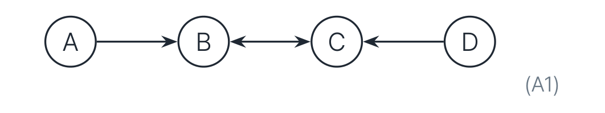
- A1. 그래프 \(A \to B \leftrightarrow C \leftarrow D\)에서
- \(A\)와 \(D\)를 분리하는 \(\mathbf{Z} \subseteq \{B, C\}\)를 모두 찾으시오.
- \(A\)와 \(C\)를 분리하는 \(\mathbf{Z} \subseteq \{B, D\}\)를 모두 찾으시오.
- A2. DAG: \(A \to B \to C\), \(L \to B\), \(L \to C\) (\(L\)은 잠재). \(\{A, B, C\}\) 위의 MAG를 구성하시오. 인접이 생기는지 주의하십시오.
- A3. DAG: \(X \to S \leftarrow Y\) (\(S\)는 선택 변수). \(\{X, Y\}\) 위의 MAG는? 마크까지 정확히 답하시오.
9.2 연습 B · C · D — 동치, FCI, 조정
- B1. \(\mathcal{M}_1: A \to B \leftrightarrow C\)와 \(\mathcal{M}_2: A \to B \leftarrow C\)는 마르코프 동치인가? 동치라면 그 PAG를 그리시오.
- B2. Part 4의 \(\mathcal{M}_1\)(\(V\)가 충돌자)과 \(\mathcal{M}_2\)(\(V\)가 비충돌자)가 다르게 답하는 CI 질의를 하나 제시하시오.
- C1. 나비 그래프의 오라클 CI로 FCI를 끝까지 돌려 최종 PAG를 구하시오. (R0가 만드는 충돌자 4개부터.)
- C2. 그 PAG에서 \(X_2 \to X_5\)와 \(X_4 \to X_1\)이 가시적인지 판정하시오.
- C3. 같은 PAG에서 \(P(x_1 \mid do(x_4))\)의 조정집합을 구하시오.
- D1. FCI는 왜 Step 4에서 v-구조를 다시 찾는가?
- D2. 같은 CI에서 CPDAG는 \(A \to C\), PAG는 \(A \circ\!\!\to C\)를 준다. 꼬리 하나의 차이는 어떤 가정의 차이인가?
- D3. MAG의 \(X \to Y\)는 교란 없음을 뜻하지 않는다. “교란 없음”을 주는 개념은 무엇이며 왜 그것으로 충분한가?
9.3 해답 A
A1. 경로는 \(A \to B \leftrightarrow C \leftarrow D\) 하나뿐이고, 충돌자는 \(B, C\)입니다.
- (a) \(\emptyset\), \(\{B\}\), \(\{C\}\)는 분리 ✓ — 두 충돌자를 동시에 조건화한 \(\{B, C\}\)만 경로를 엽니다.
- (b) \(A\)–\(C\) 경로는 \(A \to B \leftrightarrow C\)입니다. \(\emptyset\) ✓ (\(B\)가 충돌자이므로 막힘), \(\{D\}\) ✓ (\(B \notin \mathrm{An}(\{D\})\)). 반면 \(\{B\}\), \(\{B, D\}\)는 경로를 엽니다.
A2. \(A\)–\(C\)에 유도 경로 \(A \to B \leftarrow L \to C\)가 있습니다(\(B\)가 충돌자이고 \(B \in \mathrm{an}(C)\)). \(\to\) 인접합니다! 마크는 조상 관계로 정해지므로,
\[ \text{MAG} = \text{삼각형: } A \to B,\ B \to C,\ A \to C \]
덤: 세 엣지 모두 비가시적입니다. 즉 교란이 공존하는 세계와 구별할 수 없습니다.
A3. \(X, Y\)가 모두 \(\mathrm{an}(S)\)이므로 양 끝이 꼬리 \(\to\) \(X - Y\) (무방향)입니다. 충돌자를 상시 조건화한 대가입니다.
9.4 해답 B
B1. 같은 골격, 같은 비차폐 충돌자(\(\langle A, B, C \rangle\)), 판별 경로 없음 \(\to\) 동치입니다. PAG는 \(A \circ\!\!\to B \leftarrow\!\!\circ C\)이며, member는 \(A \{\to, \leftrightarrow\} B \times B \{\leftrightarrow, \leftarrow\} C\)의 네 가지 전부입니다.
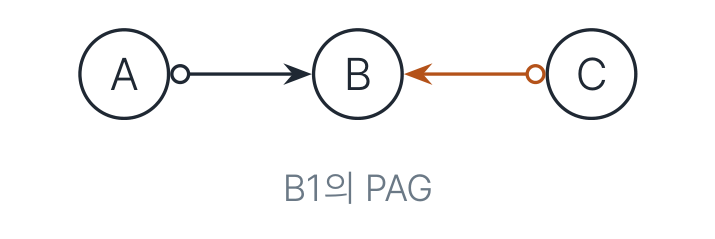
B2. \(X \perp\!\!\!\perp Y \mid \{W\}\)가 답입니다.
- \(\mathcal{M}_1\): Yes — \(X \to W \leftrightarrow V \leftrightarrow Y\)가 충돌자 \(V\)에서 막힙니다.
- \(\mathcal{M}_2\): No — \(V\)가 비충돌자이므로 \(\{W\}\) 조건 시 \(X \to W \leftrightarrow V \to Y\)가 열립니다.
9.5 해답 C — 나비 그래프 FCI 전체 실행
분리집합은 다음과 같습니다.
\[ (X_1, X_3): \{X_4\}, \quad (X_2, X_4): \{X_3\}, \quad (X_3, X_5): \{X_2\}, \quad (X_1, X_5): \{X_2, X_3, X_4\} \]
마지막 것이 바로 PDS 단계에서 발견되는 분리집합입니다.
- R0: 충돌자 4개 — \(\langle X_1, X_2, X_3 \rangle\), \(\langle X_2, X_1, X_4 \rangle\), \(\langle X_3, X_4, X_5 \rangle\), \(\langle X_2, X_5, X_4 \rangle\) (각각 중간점이 해당 분리집합에 없습니다).
- 이 시점에 \(X_1 \leftrightarrow X_2\), \(X_4 \leftrightarrow X_5\)는 이미 완성됩니다(양쪽 충돌자가 겹치므로).
- R1: \(X_3 \ast\!\!\to X_2 \circ\!\!-\!\!\ast\, X_5\)이고 \(X_3, X_5\) 비인접 \(\to\) \(X_2 \to X_5\). 같은 방식으로 \(X_3 \ast\!\!\to X_4 \circ\!\!-\!\!\ast\, X_1\) \(\to\) \(X_4 \to X_1\).
- 더 발동하는 규칙이 없으므로 종료합니다.
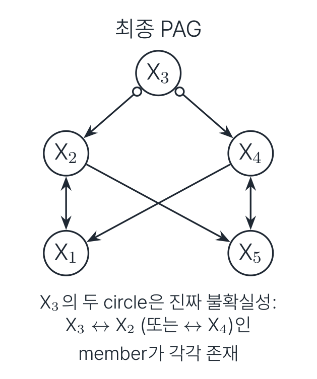
C2. 둘 다 가시적입니다.
- \(X_2 \to X_5\)의 증인은 \(X_1\)입니다 (\(X_1 \ast\!\!\to X_2\)이고 \(X_1\)과 \(X_5\)는 비인접).
- \(X_4 \to X_1\)의 증인은 \(X_5\)입니다 (\(X_5 \ast\!\!\to X_4\)이고 \(X_5\)와 \(X_1\)은 비인접).
C3. 순응적입니다 ✓. 비인과 확정 상태 경로 \(\langle X_4, X_3, X_2, X_1 \rangle\)과 \(\langle X_4, X_5, X_2, X_1 \rangle\)은 각각 충돌자 \(X_2\), \(X_5\)에서 \(\emptyset\)으로 이미 막혀 있습니다. 따라서
\[ \mathbf{Z} = \emptyset: \qquad P(x_1 \mid do(x_4)) = P(x_1 \mid x_4) \]
9.6 해답 D
D1. Step 3(PDS)에서 엣지가 지워지면 비차폐 삼중항과 분리집합이 바뀔 뿐 아니라, Step 2에서 찍은 화살촉 전체의 보장이 무효가 됩니다. 그래서 잔존 엣지를 \(\circ\!\!-\!\!\circ\)로 리셋한 뒤 충돌자를 다시 찾습니다.
D2. 인과충분성 가정의 차이입니다. CPDAG의 꼬리는 “잠재 교란 없음”을 전제로 데이터 + 가정이 합작한 결론이고, PAG는 그 가정을 빼고 데이터 몫만 남긴 것입니다.
D3. 가시성(visibility)입니다. 가시적 \(X \to Y\)이면 교란된 세계는 같은 PAG를 낼 수 없습니다(증인의 비인접성이 유도 경로와 모순되기 때문입니다). 따라서 그 엣지에 한해서는 DAG의 \(X \to Y\)처럼 다뤄도 안전합니다.
정리하며 (Closing Remarks)
이 자료의 논리 사슬을 한 장으로 요약하면 다음과 같습니다.
| 단계 | 내용 | 근거 |
|---|---|---|
| ① 문제 제기 | 잠재변수를 주변화한 CI 구조는 관측 변수 위의 어떤 DAG로도 표현되지 않는다 | Part 1, 4변수 반례의 세 줄 증명 |
| ② 표현 선택 | ADMG는 CI로 도달 불가 \(\to\) 쌍당 엣지 하나로 요약한 표준형 MAG | Part 1.4, Part 3.1 (RS 2002 §4.2) |
| ③ 의미론 고정 | 마크 \(=\) 조상 관계 주장 \(\to\) ancestral 3조건과 maximality가 자동으로 따라 나옴 | Part 2.4–2.7 (RS 2002 Cor. 4.3, §5) |
| ④ 동치류 | 골격 + 비차폐 충돌자로는 부족 \(\to\) 판별 경로 위 충돌자 지위까지 필요, 대표 그래프는 PAG | Part 4 (Ali et al. 2009) |
| ⑤ 학습 | PC 뼈대 + Possible-D-SEP \(\to\) R0–R10, 출력은 최대 정보 PAG (건전 · 완전) | Part 5 (Colombo et al. 2012; Zhang 2008 AIJ) |
| ⑥ 읽기 | 조상 주장(마크) · CI(확정 상태) · 교란 배제(가시성) 세 축으로 PAG를 해독 | Part 6 (Zhang 2008 JMLR) |
| ⑦ 사용 | 순응성 + \(\mathrm{Forb}\) 회피 + 비인과 경로 차단 \(=\) GAC, 존재 판정은 \(\mathrm{Adjust}\) 하나로 | Part 7 (Perković et al. 2018) |
| ⑧ 그 너머 | 조정으로 안 되면 CIDP, 그것도 안 되면 비식별 \(\to\) 부분 식별 또는 실험 설계 | Part 7.7 (Jaber et al. 2022) |
개인적인 감상 몇 가지를 덧붙입니다.
- 가장 인상적인 설계 결정은 “마크를 조상 관계에 대한 주장으로 읽는다”는 §2.4의 한 문장입니다. 이 문장을 받아들이는 순간 조상 그래프의 세 금지 조건이 임의의 규약에서 논리적 무모순성 요건으로 바뀌고, 최대성은 장식이 아니라 “비인접 \(=\) 어떤 CI가 존재”라는 그래프–데이터 사전의 무결성 조건이 됩니다. 정의를 나열하는 대신 의미론 하나를 먼저 못 박고 나머지를 파생시키는 서술 순서가, 이 자료를 슬라이드 모음이 아니라 하나의 논증으로 만듭니다.
- PAG의 원을 “정보 손실이 아니라 정직함”으로 재해석한 §4.6도 인상적입니다. CPDAG와 PAG를 같은 CI에서 출발시켜 나란히 놓았을 때, 둘의 차이인 꼬리 하나가 데이터가 아니라 인과충분성 가정에서 왔다는 사실이 드러납니다. 우리가 평소 CPDAG를 보며 무의식적으로 누리던 보너스가 무엇이었는지를 이보다 선명하게 보여 주기는 어렵습니다.
- 가시성(visibility)이 이 자료의 진짜 주인공이라고 생각합니다. §3.3의 “함정 주의”에서 던진 문제 — MAG의 \(X \to Y\)는 교란 없음을 뜻하지 않는다 — 가 Part 6에서 가시성으로 해결되고, Part 7의 순응성 조건으로 곧바로 재등장하며, 마지막 연습문제 D3에서 다시 확인됩니다. 하나의 개념이 세 Part에 걸쳐 문제 제기 → 해결 → 응용의 완결된 호를 그린다는 점이 구성의 미덕입니다.
- 실용적 한계도 정직하게 남아 있습니다. 이 자료의 모든 논의는 CI 오라클을 전제합니다. §5.15가 인정하듯 유한 표본에서 CI 오류는 골격 단계에서 가장 아프고, FCI 변종 대부분이 바로 그 지점을 손보기 위해 존재합니다. 오라클 하의 완전성 정리가 아무리 아름다워도, 실제 데이터에서 Possible-D-SEP 단계의 검정 수가 폭발한다는 사실은 그대로 남습니다.
- 가장 흥미로운 공백은 §7.8이 짚은 gap ①입니다. DAG/CPDAG에서는 O-집합 이론으로 분산 최적 조정집합이 해결되었지만, PAG에서는 “최적”의 정의부터 미해결입니다. GAC가 “조정 가능한가”를 완전하게 답한 뒤에도 “어느 조정이 더 나은가”는 여전히 열려 있다는 것 — 식별과 효율이 별개의 층위라는 사실이 이 공백에서 가장 잘 드러납니다.